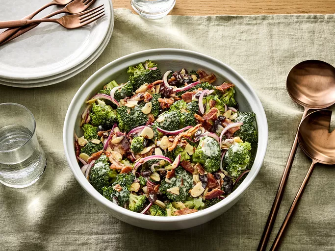

Broccoli Salad

Description
Easy broccoli salad that has a tasty combination of fresh broccoli, cranberries, nuts, and bacon tossed in a tangy creamy dressing.
Ingredients
- 1/2 pound bacon
- 2 heads fresh broccoli, cut into bite-sized pieces
- 1 small red onion, sliced into bite-sized pieces
- 3/4 cup raisins
- 3/4 cup sliced almonds
- 1 cup mayonnaise
- 1/2 cup white sugar
- 2 tablespoons white wine vinegar
Directions
- Gather all ingredients.
- Place bacon in a deep skillet and cook over medium-high heat until evenly brown, 7 to 10 minutes; drain, cool and crumble.
- Combine bacon, broccoli, onion, raisins, and almonds together in a bowl; mix well.
- To make the dressing: Mix mayonnaise, sugar, and vinegar together until smooth.
- Stir dressing into the salad until broccoli is evenly coated.
- Serve immediately or chill the salad before serving, as desired. Enjoy!